Day 1 — Mapping
The next 45 minutesPlan
| notebook | idea | you will see | min |
|---|---|---|---|
| day1_01_two_view_geometry | camera model, features, RANSAC, E, triangulation | 3D points from 2 photos | 12 |
| day1_02_visual_odometry | init → track (PnP) → map, drift | a trajectory from a video | 6 |
| day1_03_pose_graph | loop closure + Gauss–Newton | the loop snaps shut | 10 |
| day1_04_geometric_maps_open3d | points, voxels, TSDF, occupancy grid | 5 maps of one room | 7 |
| day1_05_colmap_cli | SfM step by step from the CLI | what COLMAP writes | 10 |
Everything runs on a Colab CPU runtime. Data: Sacre Coeur photos (hloc), TUM RGB-D fr3/long_office_household, Stanford lounge RGB-D.
Big pictureWhat a visual SLAM system does
Camera modelThe pinhole camera
- K: intrinsics (calibration)
- R, t: extrinsics, the pose we want
- λ = depth is divided away, so one image gives no 3D
Front-end · step 1Features: points we can find again
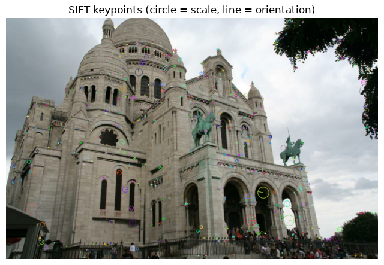
| SIFT (2004) | ORB (2011) | |
|---|---|---|
| descriptor | 128-D float | 256-bit binary |
| distance | L2 | Hamming (fast) |
| used in | COLMAP | ORB-SLAM |
Keypoint = where (corner/blob, scale, orientation). Descriptor = what it looks like.
Learned: SuperPoint, ALIKED + LightGlue (Day 2).
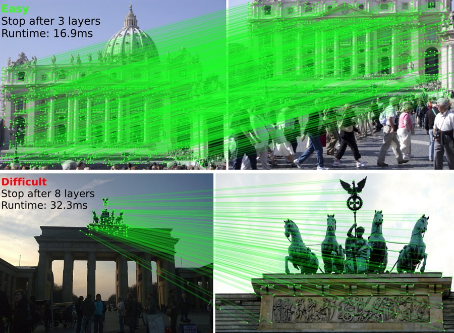
Front-end · step 2Matching + Lowe's ratio test
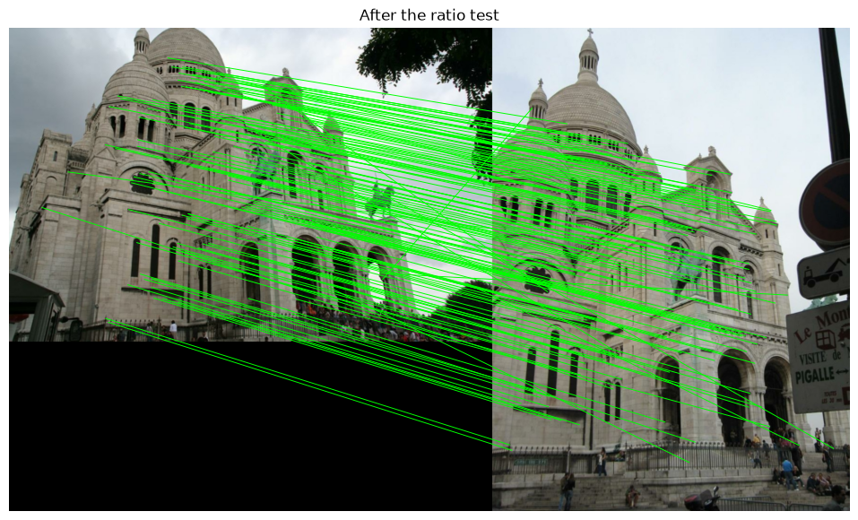
Keep a match only if \( d_1 / d_2 < 0.75 \) (best vs. second-best neighbour). Ambiguous points get dropped. 4000 → ~800 matches.
GeometryEpipolar constraint
The ray of \(\mathbf{x}_1\) seen from camera 2 is a line. The match must be on it:
$$\tilde{\mathbf{x}}_2^\top F\,\tilde{\mathbf{x}}_1 = 0$$ $$E = K_2^\top F K_1 = [\mathbf{t}]_\times R$$- F: 7 DOF, no calibration needed
- E: 5 DOF (rotation + direction of t)
Robust estimationRANSAC
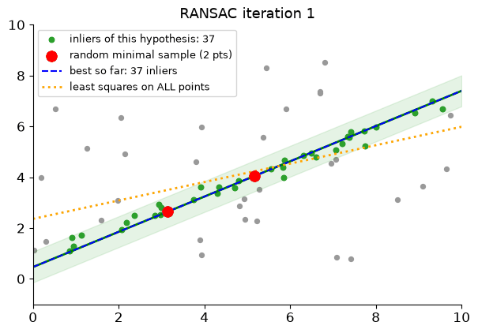
- sample a minimal set
- fit the model
- count inliers (distance < τ)
- repeat, keep the best, refit
| inlier ratio w | s = 3 | s = 5 | s = 8 |
|---|---|---|---|
| 0.7 | 11 | 26 | 78 |
| 0.5 | 35 | 146 | 1177 |
| 0.3 | 169 | 1893 | 70188 |
RANSAC on real matchesInliers, outliers, epipolar lines
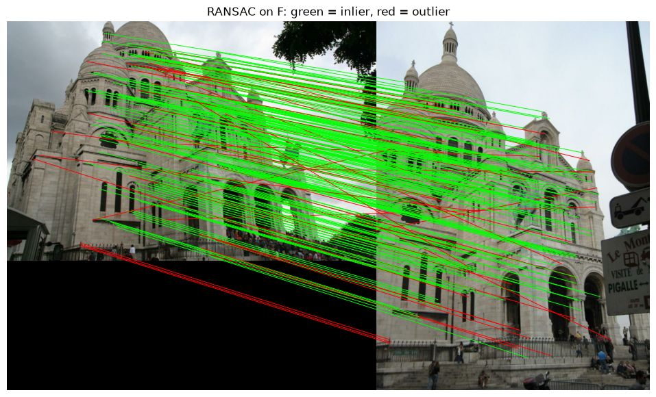
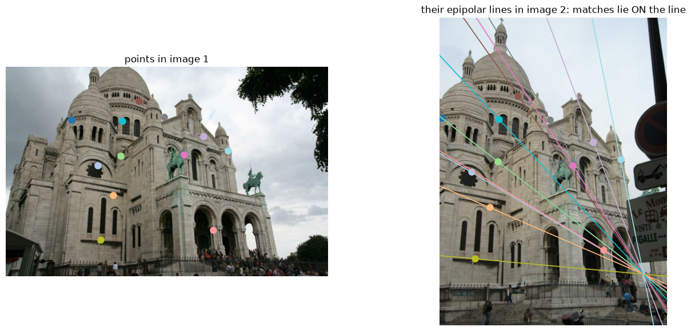
Pose + structureRelative pose, then triangulation
\(E = U\,\mathrm{diag}(1,1,0)\,V^\top\) gives 4 candidate \((R,\mathbf{t})\). Keep the one with points in front of both cameras.
DLT triangulation: each view gives \(\tilde{\mathbf{x}}\times P\tilde{\mathbf{X}} = 0\), i.e. 2 equations.
$$A\tilde{\mathbf{X}} = \mathbf{0} \Rightarrow \tilde{\mathbf{X}} = \text{last singular vector}$$Scale is unknown
‖t‖ = 1. A small room seen up close looks the same as a big room seen from far away.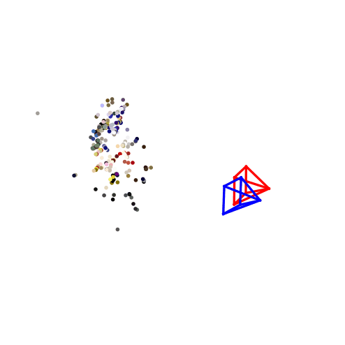
Front-end over a videoInitialise → track → map
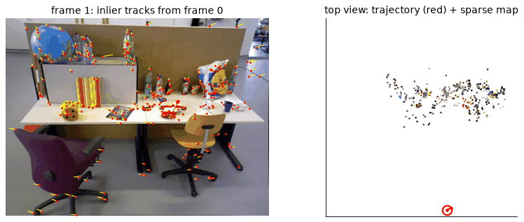
Same loop as PTAM / ORB-SLAM tracking. PnP is the Day 2 topic. The scale stays fixed by the initial baseline.
Why VO is not enoughDrift
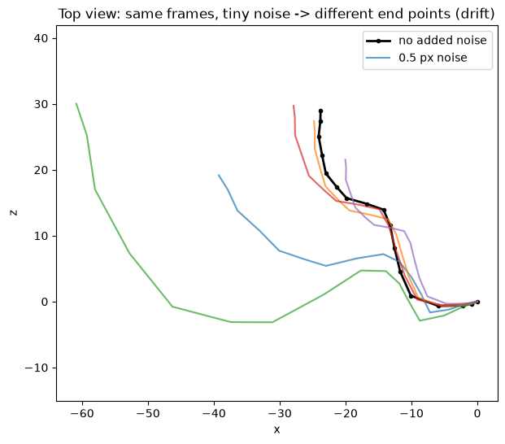
Every error is inherited by all later poses. Monocular: the scale drifts too.
Same 17 frames, only 0.5 px of noise → very different end points.
Fix
Recognise a revisited place (loop closure) and optimise all poses together.SLAM as least squaresPose graph
Nodes = poses \(\mathbf{x}_i\). Edges = measured relative poses \(\mathbf{z}_{ij}\) (odometry, loop closures).
$$\mathbf{e}_{ij} = \mathrm{t2v}\big(Z_{ij}^{-1} X_i^{-1} X_j\big)$$ $$\mathbf{x}^* = \arg\min_{\mathbf{x}} \sum_{ij} \mathbf{e}_{ij}^\top \Omega_{ij}\, \mathbf{e}_{ij}$$Gauss–Newton: linearise, solve, repeat
$$H\Delta\mathbf{x} = -\mathbf{b},\quad H = \textstyle\sum J^\top\Omega J$$Fix \(\mathbf{x}_0\) (gauge). Grisetti et al., A Tutorial on Graph-Based SLAM, 2010.
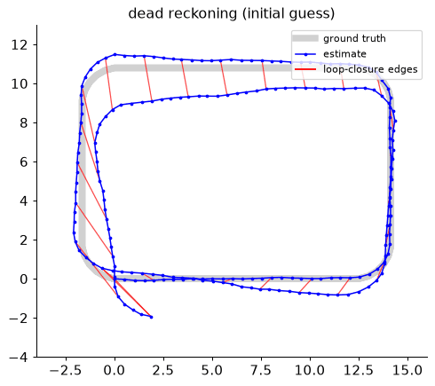
Why it scales · what it buysSparsity and consistency
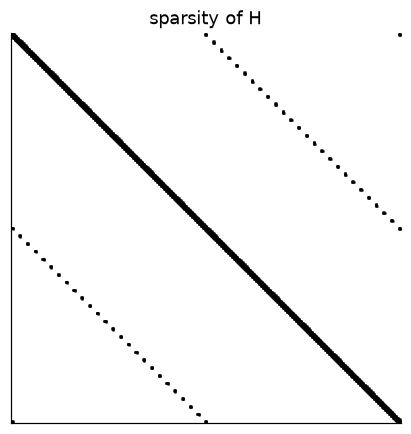
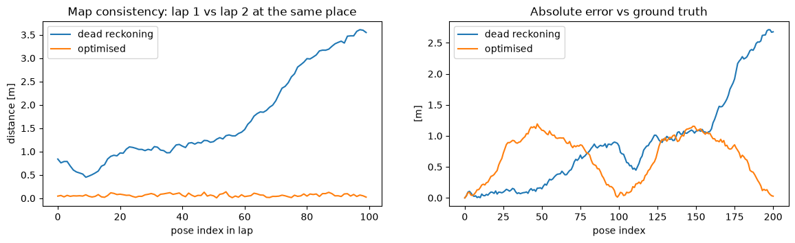
Lap-to-lap inconsistency 1.7 m → 0.06 m. Some absolute error remains: no GPS, so nothing pins the map to "true" world coordinates.
Same machinery, different errorBundle adjustment
$$\min_{\{R_i,\mathbf{t}_i\},\{\mathbf{X}_j\}} \sum_{(i,j)} \rho\Big(\big\|\pi\big(K(R_i\mathbf{X}_j+\mathbf{t}_i)\big) - \mathbf{x}_{ij}\big\|^2\Big)$$| pose graph | bundle adjustment | |
|---|---|---|
| unknowns | poses | poses + 3D points (+ intrinsics) |
| measurement | relative pose | pixel observation |
| used for | loop closing over big maps | local windows (ORB-SLAM), full SfM (COLMAP) |
| solvers | Gauss–Newton / Levenberg–Marquardt, sparse Schur complement · g2o, Ceres, GTSAM | |
ρ = robust loss (Huber, Cauchy) so that left-over outliers don't dominate.
Same room, different mapsLounge (60 RGB-D frames + poses)
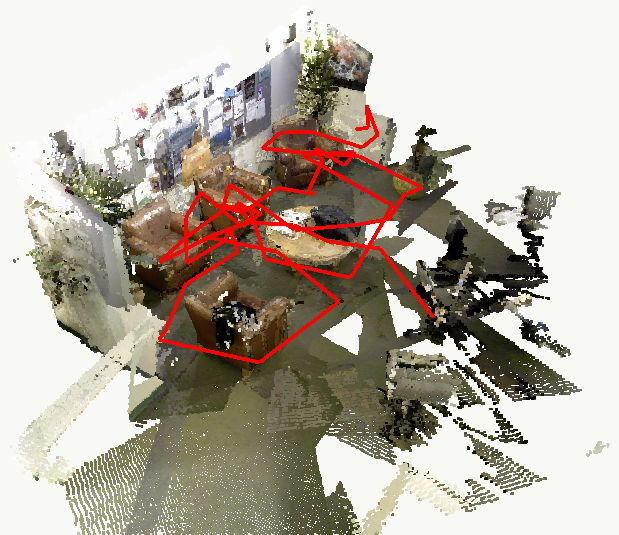
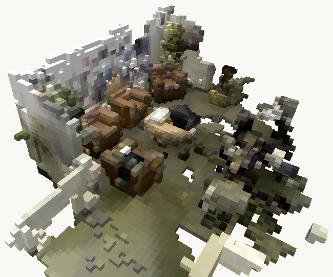
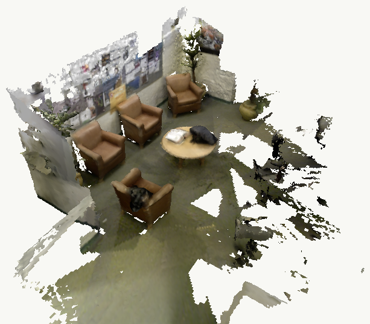
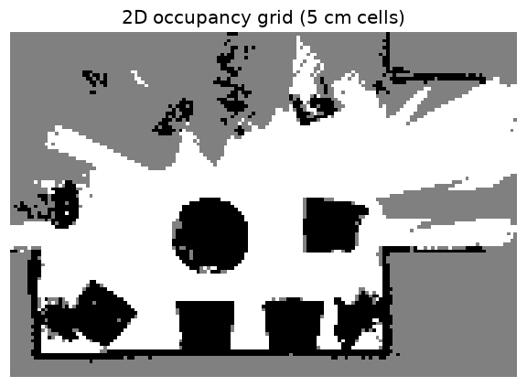
From depth to surfacesBack-projection and TSDF fusion
TSDF (KinectFusion, Newcombe et al. 2011): each voxel stores a truncated signed distance to the surface, averaged over frames:
$$D \leftarrow \frac{W D + w_k d_k}{W + w_k},\quad W \leftarrow W + w_k$$Surface = zero level set (marching cubes). Averaging removes depth noise.
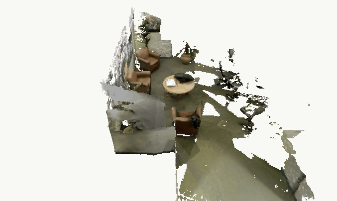
The map a ground robot plans onOccupancy grid with log-odds
- cells on the ray: free (−0.4)
- cell at the hit (0.1–1.5 m high): occupied (+0.85)
- Bayes' rule becomes addition
Thrun, Burgard & Fox, Probabilistic Robotics, ch. 9. The floor plane comes from RANSAC (again).
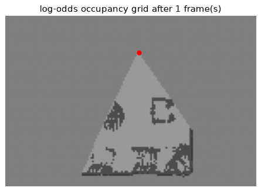
Structure-from-Motion (Schönberger & Frahm, CVPR 2016)The pipeline = notebooks 1–3 at scale
Installed from conda-forge (conda install -c conda-forge colmap; on Colab via micromamba). CPU is fine for sparse; dense MVS needs CUDA.
Look insidedatabase.db and the match matrix
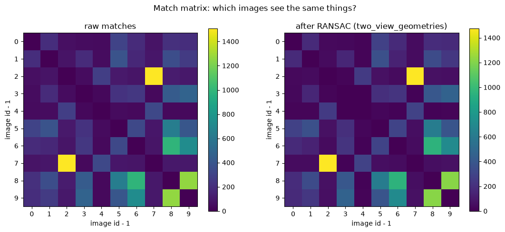
Tables: cameras · images · keypoints (N×6) · descriptors (N×128) · matches · two_view_geometries
Pair id: \( \text{id} = i \cdot 2147483647 + j \)
Raw matches vs. geometrically verified matches show which images see the same part of the scene. This is the view graph.
mapper --Mapper.snapshot_frames_freq 1Incremental SfM, image by image
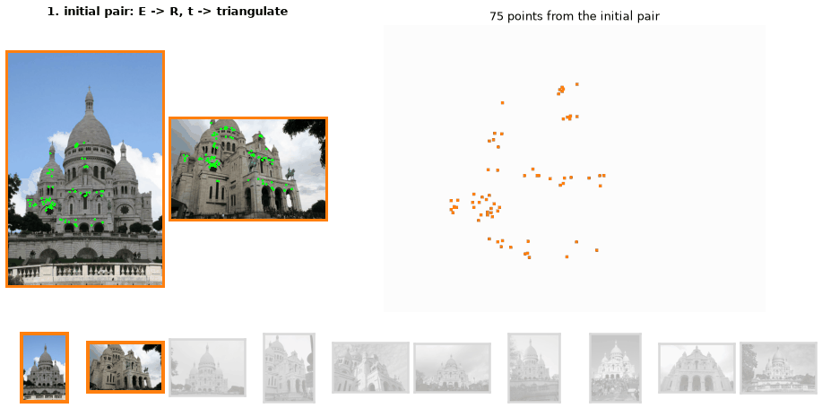
Output files: cameras.txt (intrinsics) · images.txt (pose q, t as cam-from-world + 2D points) · points3D.txt (XYZ, colour, error, track). Camera centre \(\mathbf{C} = -R(q)^\top\mathbf{t}\).
Live on the laptopCOLMAP from the command line
# 1. features (SIFT) (COLMAP 3.13; older: --SiftExtraction.use_gpu)
colmap feature_extractor --database_path ws/database.db --image_path ws/images
# 2. match all pairs + geometric verification
colmap exhaustive_matcher --database_path ws/database.db
# 3. incremental SfM (init pair, PnP, triangulation, BA)
colmap mapper --database_path ws/database.db --image_path ws/images --output_path ws/sparse
# 4. inspect / export
colmap model_analyzer --path ws/sparse/0
colmap model_converter --input_path ws/sparse/0 --output_path ws/txt --output_type TXT
# 5. dense (CUDA): undistort -> PatchMatch stereo -> fusion
colmap image_undistorter --image_path ws/images --input_path ws/sparse/0 --output_path ws/dense
colmap patch_match_stereo --workspace_path ws/dense
colmap stereo_fusion --workspace_path ws/dense --output_path ws/dense/fused.ply
# 6. look at it
colmap gui --database_path ws/database.db --image_path ws/images --import_path ws/sparse/0Where the field is goingLearned SLAM and 3D foundation models
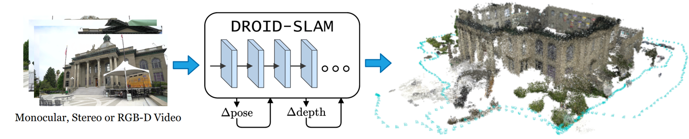
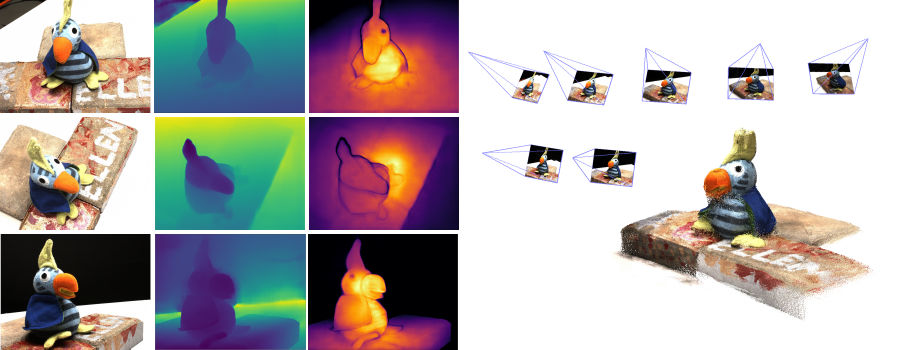
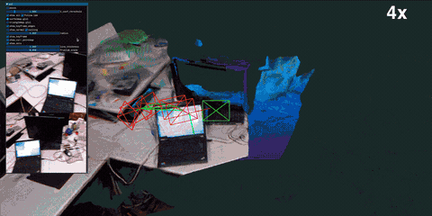
Same pieces: correspondences → poses → optimisation → map. They are now learned and dense.
Takeaways
- Camera model + features + RANSAC → reliable matches
- E → (R, t) up to scale → triangulate → 3D
- VO = init → track (PnP) → map, and it drifts
- Loop closure + pose graph / BA = sparse least squares → a consistent map
- One SLAM result, many maps: points · voxels · TSDF · occupancy grid
- COLMAP = all of the above, offline
Day 2: localise in these maps (PnP, hloc) and plan paths in them (A*, OMPL).